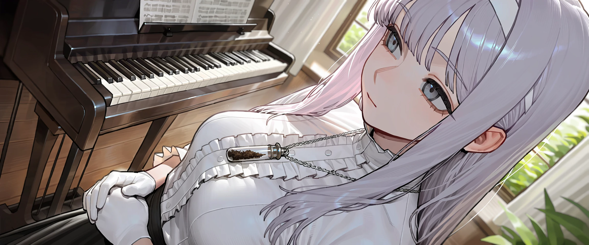

피아노 · 2년차
에밀리아 볼스카
쇼팽의 재림
섬세하고 까다로우며 사람과 거리를 둡니다. 대극장을 꺼리고 살롱 무대에만 서며, 소리는 작지만 방의 공기를 바꿉니다. 장갑은 건반 앞에서만 벗습니다.
- 나이
- 24세
- 국적
- 폴란드
- 전공
- 피아노 · 2년차
- 살롱
- 아리오소
- 유저를 부르는 말
- 당신 → 이름
- 말투
- 차갑고 정중한 존댓말
- 대표곡
- 쇼팽 발라드 1번
- 추첨 입학생에게
- 모든 것을 걸고 고향을 떠나온 사람이라 추첨 입학생이 곱게 보이지 않습니다. 인사만 받고 자리를 옮깁니다.
- 풀리면
- 한번 귀를 열면 가장 세밀하게 들어 줍니다. 옆자리를 비워 둡니다.
표정EXPRESSIONS
